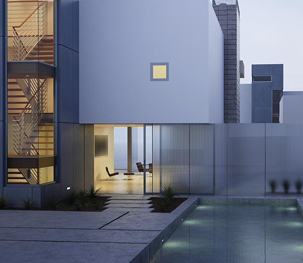

Timeless designs
Modern innovations with a focus on functional floor plans, family friendly open living and
dramatic curb appeal drives us throughout the entire home design and building
process.
Artisan Homes offers extensive selections of flooring, fixtures, trim and cabinetry that
provide
your family the opportunity to customize a home based on your personal lifestyle and
preferences.
Custom Designed and Built Artisan Homes in Jacksonville, Florida
Learn more
Timeless designs
Learn more
Timeless designs
Learn more
Master Craftsman
Since 2003, Artisan Homes has been providing families in greater Jacksonville with design
driven,expertly crafted custom homes of exceptional value. Quality, lifestyle and energy
efficiency are core tenets of our business model.
To ensure your families comfort and investment, our custom-craftedhomes are constructed
using only the highest quality materials, modern features and expert oversight.
Energy efficiency
Artisan Homes is committed to energy conservation and efficiency. We adhere to energy saving
building standards and building techniques, featuring modern HVAC systems and appliances
that use far less energy than technologies employed even 5 years ago.
Artisan Homes can save your family up to $200 per month on the cost of utilities.
Master Craftsman
Learn more
Master Craftsman
Learn more